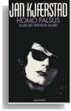

Tara Chace's Postmodernism Pages
| Home | Postmodernism | Metamorphoses | The Ferry Crossing | Amorfiaana | Homo falsus | Lion's Heart | Frankenstein's Notebook | ||
Homo falsus
A Tale Told by a Modernist Postmodernist: Jan Kjærstad's Homo falsus
|
Homo falsus is widely regarded as one of the best known examples of postmodern Norwegian literature. My discussion of the text includes the following items:
The beginning of my article appears to the right --> and there is a link below that to download the entire article.
 |
Works Cited Andersen, Per Thomas. "Repetisjonens funksjon i Jan Kjærstad's Homo falsus." Fra Petter Dass til Jan Kjærstad: Studier i diktekunst og komposisjon. Landslaget for norskundervisning (LNU) skriftserie 111. Oslo: LNU: Cappelen, 1997. 310–328.
Baker, Stephen. The Fiction of Postmodernity. Lanham: Rowman and Littlefield, 2000.
Berger Foundation. Borobudur. 1 January 2003 Burton, Richard F., Trans. The Book of the Thousand Nights and a Night. London: The Burton Club, 1885. Reprint. 10 volumes & 6 supplemental volumes. USA: The Burton Club, n.d.
Conze, Edward. "Historical Background of the Buddhasasana in Indonesia." A Short History of Buddhism. London: Allen & Unwin, 1982.
Escher, Maurits Cornelius. Drawing Hands. 1948. 22 December 2002 Flatekval, Eli. "I den fullstendig opplysende teksten... Jan Kjærstads Menneskets matrise og Homo falsus eller det perfekte mord." Diss. U of Bergen, Spring 1991.
Fløgstad, Kjartan. Tyrannosaurus text. Oslo: Samlaget, 1988.
Fontein, Jan. The Law of Cause and Effect in Ancient Java. Nieuwe Reeks 140. New York: Koninklijke Nederlandse Akademie van Wetenschappen Verhandelingen Afdeling Letterkunde, 1989.
Fosse, Jon. "Å sjæ ansiktet før karikaturen." Gula Tidend. 16 October 1986. Rpt. in Fræ telling via showing til writing: essays. Oslo: Samlaget, 1989.
Haugen, Jon Arvid. "Den nødvendige løgn. En studie i Jan Kjærstads roman Homo falsus eller: Det perfekte mord." Diss. U of Tromsø, 1990.
Homo Falsus (Det perfekte mord). Dir. Eva Isaksen. NFI, 1992.
Høeg, Peter. Frøken Smillas fornemmelse for sne. Copenhagen: Rosinante, 1992.
Jameson, Fredric. Postmodernism, of, The Cultural Logic of Late Capitalism. Durham: Duke U P, 1991.
Jencks, Charles. The Language of Post–Modern Architecture. 1977. 6th ed. New York: Rizzoli, 1991.
Joyce, James. Ulysses. New York: Vintage International, 1990.
Kjærstad, Jan. Homo falsus: eller det perfekte mord. Oslo: Aschehoug, 1984.
Kjærstad, Jan. "70–tall mot 80–tall." Dagbladet 21 Oct. 1986. Rpt. in Menneskets matrise: Litteratur i 80–ærene. Oslo: Aschehoug, 1989: 168–181.
Kjærstad, Jan. Menneskets matrise: Litteratur i 80–ærene. Oslo: Aschehoug, 1989.
Kjærstad, Jan. Forføreren. Oslo: Aschehoug, 1993.
Kjærstad, Jan. Interview with Alf van der Hagen. "En torpedo under Arken." Dialoger II: Åtte forfattersamtaler. Oslo: Forlaget Oktober. 1996. 138–172.
Kjærstad, Jan. Menneskets felt:Essays. Oslo: Aschehoug, 1997.
Kjærstad, Jan. "Klagesang fra vernet mann." Aftenposten Morgen. 1 July 1997.
Kjærstad, Jan. "Kjærstad pæ nettet." Dagbladet. 10 May 1999. 10 Nov. 2001 Kjærstad, Jan. Interview with Mariann Aalmo Fredin. Dagbladet 7 Sept. 1999. 10 November 2001 Kjærstad, Jan. "Kjærstad pæ nettet." Dagbladet. 23 February 2000. 10 Nov. 2001 Kjærstad, Jan. "Re: Waw!" E–mail to Tara F. Chace. 3 May 2002.
Kongslien, Ingeborg R. "Mennesket i tekst og teori: Jan Kjærstad's Homo falsus." Norsk Litterær Årbok (1998): 104–115.
Krom, Nicolaas Johannes. Beschrijving van Barabudur. Vol. 1. The Hague: M. Nijhoff, 1927. Reprint trans. Barabudur: Archaeological Description. New York: AMS Press, 1983.
Kusuma, Edwin Hendra. Borobudur Page. 14 Sept. 2001. PT Angsa Indonesia Tours & Travel. 15 December 2001 Leyner, Mark. Tooth Imprints on a Corn Dog. Excerpt in Postmodern American Fiction. Eds. Paula Geyh, Fred G. Leebrun, Adrew Levy. New York: Norton, 1998. 242–255.
Linneberg, Arild and Geir Mork. "Antinomies of Nominalism: Postmodernism in Norwegian Fiction of the 1980s." Postmodern Fiction in Europe and the Americas. Postmodern
Studies 1. Eds. Theo D’haen and Hans Bertens. Amsterdam: Rodopi, 1988. 45–62.
Lyotard, Jean–François. The Postmodern Condition: A Report on Knowledge. Trans. Geoff Bennington and Brian Massumi. Minneapolis: University of Minnesota Press, 1984.
McHale, Brian. Postmodernist Fiction. New York: Routledge, 1987.
McHale, Brian. Constructing Postmodernism. New York: Routledge, 1992.
Mitchell, Donald W. Buddhism: Introducing the Buddhist Experience. New York: Oxford U P, 2002.
Mus, Paul. Barabudur: Esquisse d'une histoire du Bouddhisme fondée sur la critique archéologique des textes. Hanoi: Imprimerie d'Extrême–Orient, 1935. Reprint Mythology Series, New York: Arno Press, 1978.
Persson, Magnus. "Kampen om högt och lægt. Studier i den sena nittonhundratalsromanens förhællande till masskulturen och moderniteten." Diss. U of Lund, 2002.
Queen Christina. Dir. Rouben Mamoulian. Perf. Greta Garbo, John Gilbert, Ian Keith, Lewis Stone, Elizabeth Young, and C. Aubrey Smith. MGM, 1934.
Røssaak, Eivind. "Fløgstads orientalisme." Vinduet 3 (1998):16–23.
Røssaak, Eivind. Det postmoderne og de intellektuelle. Oslo: Spartacus, 1998.
Røssaak, Eivind. "Hva skjedde med postmodernismen?" Aftenposten. 10 Nov. 1998. 26 Jan. 2003 Rottem, Øystein. "Inn i medietidsalderen 1965–1980." Norges Litteraturhistorie. Etterkrigslitteraturen. Vol. 2. Oslo: Cappelen, 1997.
Rottem, Øystein. "Vær egen tid—1980 til 1998." Norges Litteraturhistorie. Etterkrigslitteraturen. Vol. 3. Oslo: Cappelen, 1998.
Rushdie, Salman. Satanic Verses. New York: Viking, 1988.
Rushdie, Salman. "Is Nothing Sacred?" Imaginary Homelands: Essays & Criticism, 1981–1991. London: Granta, 1991.
Woolf, Virginia. Orlando: A Biography. New York: Harcourt, Brace and Co., 1928. |
© 2005 Tara F. Chace